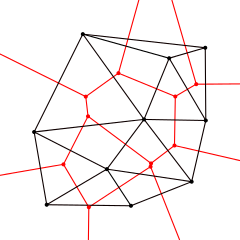

Planar Subdivision
The Subdiv2D class described in this section is used to perform various planar subdivision on a set of 2D points (represented as vector of Point2f). OpenCV subdivides a plane into triangles using the Delaunay’s algorithm, which corresponds to the dual graph of the Voronoi diagram. In the figure below, the Delaunay’s triangulation is marked with black lines and the Voronoi diagram with red lines.
The subdivisions can be used for the 3D piece-wise transformation of a plane, morphing, fast location of points on the plane, building special graphs (such as NNG, RNG), and so forth.
// classes class cv::Subdiv2D;